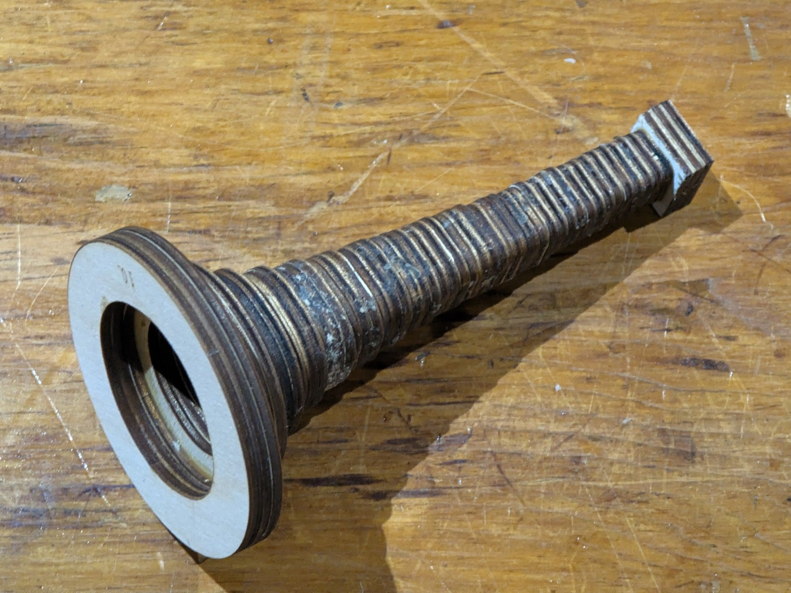
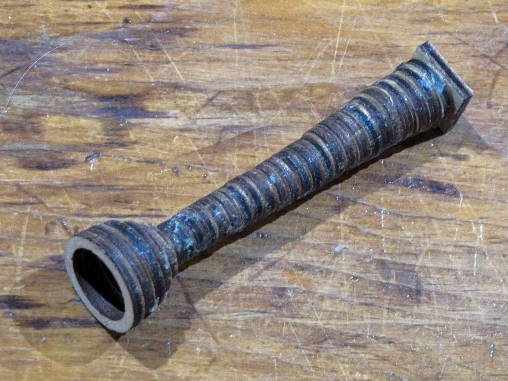

The three-turn trumpet
The one that plays. The spiral is in wood too; this one is glued up, varnished and blown, and it makes a note. A coil of 1096mm in 12 sections winding three whole turns about a north–south axis, with a mouthpiece at one end and a 153mm bell at the other.
It plays. One of its notes is F4 — 349.2 Hz, measured off the instrument.

Turn it → The viewer is a page of its own, not a frame in this one: drag to rotate, and the slider reveals the bore a block at a time in the order it was glued.
The walk is the whole design
N1 W3 U2 E3 N3 D3 W2 U3 N3 E3 D2 W3 N3 U3 E2 D3 N1The first term is the way you face at the mouth and how far you go before anything turns; every term after it turns where you stand and then travels that many blocks. So the bore is 1 + the sum of the numbers — 43 + 1 = 44.
It is W U E D three times over. Strip the north advances and the lateral legs read W U E D W U E D W U E D: twelve of them, four to a turn, each followed by a step north. That is the whole coil, written out.
N1 W3 U2 E3 N3 D3 W2 U3 N3 E3 D2 W3 N3 U3 E2 D3 N1The first and last blocks sit on the same point of the cross-section, which a fractional number of turns cannot do. It sweeps 1080°, right-handed.
Two counts of the same winding differ by a quarter turn. The four coils in the family sweep 270°, 540°, 810° and 1080° about the circuit's own centre — one group of three lateral legs is three-quarters of a turn — and the folder names are those figures.
spiral_metrics.jssums the turn between consecutive pairs of lateral legs instead: twelve legs give eleven quarter turns, 990°, and read as 2¾. That is the tangent's rotation from the first leg to the last rather than the winding, and the two differ by exactly one quarter turn whenever the walk closes its circuit. The multi-bore viewer at../parts/bore/concept/walk/coil/fold2-long-straight/coils.htmllabels its four sets ¼, 1¼, 2 and 2¾ from that same count. Do not take a turn count from the tool without checking that the walk closes.
The numbers
| blocks | 44 |
| centreline | 1096mm |
| sections | 12 |
| parts | 80, over 12 sheets |
| bounding box | 122 × 122 × 304mm |
| turns | 3, right-handed, 1080° about a north–south axis |
| airway | 10mm square, constant |
| stranded turns | none; every turn is a bend |
| whole instrument | 1339mm — 90mm mouthpiece + 1096mm bore + 153mm bell |
| as actually built | 1321mm — the mouthpiece on it is 24 rings, not 30 |
| measured note | F4, 349.2 Hz |
The straights are stretched, the turns are not
Forty-four blocks at the plain 16mm pitch would be 704mm. This bore is 1096. The difference is --straight=30: a block that runs straight is drawn 30mm long while a block that turns stays a 16mm cube, so the tube lengthens without the walk changing and the cross-section stays square throughout.
That is the cheapest length in the project. A turn is what costs — in pieces, in glue joints, and in the +41.4% the section grows through a 90° lattice corner — and stretching the straights buys metres without buying any more of them.
One walk, four lengths
The same shape truncated at four places, and the truncations are exact:
| walk ends at | blocks | centreline | sections | |
|---|---|---|---|---|
| 0.75 turn | E3 N1 | 11 | 274mm | 3 |
| 1.5 turns | U3 N1 | 22 | 548mm | 6 |
| 2.25 turns | W3 N1 | 33 | 822mm | 9 |
| 3 turns | D3 N1 | 44 | 1096mm | 12 |
274 : 548 : 822 : 1096 is exactly 1 : 2 : 3 : 4. A tube twice as long sounds an octave lower, so four bores in that ratio are worth cutting: what the bell and the mouthpiece actually contribute becomes measurable rather than assumed. The three shorter ones are candidates in ../parts/bore/concept/walk/coil/fold2-long-straight/; this one is the object.
The twelve sections
Numbered from the mouthpiece; assemble in order. Every part is engraved with its section number, because they only go together one way.
| # | blocks | in → out | shape | parts | sheet |
|---|---|---|---|---|---|
| 1 | 1–3 | N → W | BDL~a | 6 | 325 × 70mm |
| 2 | 4–8 | W → E | BLUUR | 8 | 455 × 86mm |
| 3 | 9–11 | E → N | BRD | 6 | 337 × 70mm |
| 4 | 12–14 | N → D | BDL | 6 | 331 × 73mm |
| 5 | 15–19 | D → U | BDLLU | 8 | 481 × 73mm |
| 6 | 20–22 | U → N | BRD | 6 | 337 × 70mm |
| 7 | 23–25 | N → E | BDR | 6 | 331 × 73mm |
| 8 | 26–30 | E → W | BRDDL | 8 | 455 × 86mm |
| 9 | 31–33 | W → N | BLD | 6 | 337 × 70mm |
| 10 | 34–36 | N → U | BDR | 6 | 331 × 73mm |
| 11 | 37–41 | U → D | BURRD | 8 | 481 × 73mm |
| 12 | 42–44 | D → N | BLD~b | 6 | 337 × 70mm |
Ten distinct sheets over twelve sections. Only two shapes repeat: BRD (sections 3 and 6) and BDR (7 and 10), each cut twice. BDL and BLD each appear once coupled and once plain-ended, and a plain end is a different cut — BDL~a is 325 × 70mm against BDL's 331 × 73mm. The four five-block folds are each cut once. ~a and ~b are the two plain ends, the only faces that do not couple to another section: the mouthpiece lands on one and the bell on the other. The widest sheet is 481mm and the largest 455 × 86mm, both well inside the 600mm bed.
The cut files are in ../built/coil-fold2-long-straight-3t/cut-files/, named 01of12 through 12of12. Blue engraves, then black cuts.
Building it
- Cut the twelve bore sections, in order.
- Cut the bell — 17 rings, three passes, 51 pieces. Cut it once and you get a 51mm stub instead of a 153mm bell.
- Cut the mouthpiece — 30 rings, one pass.
- Glue each bore section closed, then join them in engraved order.
- Stack the bell rings from ring 0 at the bore; stack the mouthpiece rings from ring 0 likewise. Both are engraved in hex,
0at the bore. - Do not finish the mouthpiece. It goes to the lip as it comes off the sheet — the staircase is not sanded, the rim is not filled, and the instrument that plays has had neither.


The two on this instrument. Both are the bell and the mouthpiece, shared by every bore on the 10mm channel — the square block on each is a bore block exactly, 10mm of air in a 16mm face, which is the whole reason one of each serves every tube here.
The mouthpiece is the one part of this instrument that is not what the drawing says. It is 24 rings and 72mm; the sheet cuts 30 and 90. The instrument is short, not the drawing, and that is where the 1339mm above becomes 1321 in wood.
Clearance is one measurement, not a curve
PLAY_BY_BORE is a lookup of what has actually been cut, and it has one row: 0.025mm per side at the 10mm bore. A bore not in the table gets that value too — too loose is a worse joint than too tight is no joint — and the generator says on stderr that it is guessing, because a guess that looks like a measurement is the dangerous kind.
Whether the requirement is absolute, a fraction of the tab, or something else takes a second bore to say, and there is one bore. The comment above pin_play()'s table in ../tools/bore_split.py sets out the coupon that would settle it, and --play is the flag that cuts it.
Do not size a bore from a pipe formula
F4 lands on no simple mode of a 1.339m tube. It is 2.73 times the open–open fundamental (c/2L = 128 Hz) and 5.45 times the closed–open one (c/4L = 64 Hz), and neither multiple is a whole number. That is what a bell and a mouthpiece do: they pull the resonances away from where a plain tube would put them, and how far is not something either formula knows.
Length still sets the register, which is why the 1 : 2 : 3 : 4 family above is worth cutting — their bores are exact multiples, so what the ends contribute becomes a measurement instead of a guess.
Rebuild it
The generator lives in ../tools. Report only, writing nothing:
python3 tools/bore_split.py "N1 W3 U2 E3 N3 D3 W2 U3 N3 E3 D2 W3 N3 U3 E2 D3 N1" \
--bore=10 --straight=30 --no-writeDrop --straight=30 and the same walk reports 704mm. Writing rewrites all twelve sheets and must run under the venv python that has the gate's dependencies:
cd tools && ~/Software/boxes/venv/bin/python bore_split.py \
../built/coil-fold2-long-straight-3t/fold2-long-straight-3t.html \
--straight=30 \
--write ../built/coil-fold2-long-straight-3tThese sheets were cut. Regenerating them changes the drawing of a thing that already exists in wood — check what moved before you replace them.
The candidates
the switchback trumpet · the greek spiral — neither of them cut.
More, and licence
The trumpet writeup — the idea, the notation, the gate, and the whole library.
The rest of the build files — every instrument, each with its own writeup.
Released under CC0 1.0.